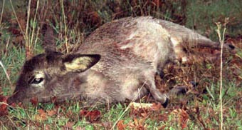

Photo du dernier dahu capturé

Fiche descriptive
- Taille
- Comparable à un petit chien
- Parenté proche
- Famille du castor (selon l'auteur)
- Odeur
- Discrète odeur de musc
- Cornes
- Aucune, malgré la monogamie
On voit bien ici la très courte patte gauche, et en dessous la très longue patte droite. L'animal est souvent décrit comme proche du chevreuil, mais beaucoup plus petit (taille d'un petit chien). Il ne porte jamais de cornes, quoique monogame. Pour en avoir beaucoup observé, mon avis diffère un peu : pour moi il est plus proche de la famille du castor, et sa fourrure est assez semblable quoique moins fournie. Sa queue ressemble à celle d'un lapin. Il dégage une discrète odeur de musc.
L'animal photographié ici est un véritable dahu de Camargue, mâle. Il n'est pas blessé, seulement étourdi : il a été remis en liberté dans les minutes qui ont suivi. Pour connaître la façon de le capturer, voir la rubrique : la chasse du dahu de Camargue. Rappelons que la chasse au dahu est strictement interdite, ce qui fait que ceux qui en ont pris ne s'en vantent pas en général.
Retour